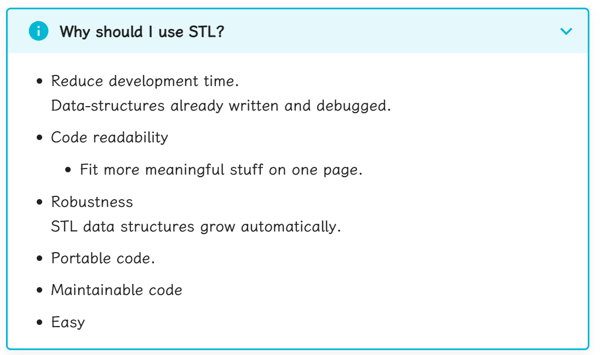

Chapter 2：Container(容器)
Collection objects are objects that can store an arbitrary number of other objects - collection本身是对象 - 其可以存储任何对象
在C++中，容器在STL中 - STL=Standard Template Library - Part of the ISO Standard C++ Library - Data Structures and algorithms for C++.

Library includes
- A pair of class((pairs of anything, int/int, int/char, etc))
- Containers
- vector(可变数组)
- deque(可变数组，在两侧延伸,双端队列)
- list(double-linked)
- sets and maps(哈希)
- Basic Algorithms(sort,searh,etc)
- All identifiers in library are in the namespace std:using namespace std;
2.1 Vector
每个容器是一个头文件，需要include
#include <iostream>
#include <vector>
using namespace std;
int main( ) {
// Declare a vector of ints (no need to worry about size)
vector<int> x;
// Add elements
for (int a=0; a<1000; a++)
x.push_back(a);
// Have a pre-defined iterator for vector class, can use it to print out the items in vector
vector<int>::iterator p;
for (p=x.begin(); p<x.end(); p++)
cout << *p << " ";
return 0;
}
vector和vector内元素的类型vector<int> x
- vector<int>::iterator是一个类型我们称之为迭代器
- it不是一个指针,*和++针对iterator进行了重载
- 语法糖（C++11）
for(auto i:x)//auto是指类型自动推断。这里会从x中依次取出一个值，最后放到i里去
{
cout<<i<<" ";
}
vector
- 可以根据需求进行容量扩充
- 私有保持容器中已有元素的个数
- 维护插入元素的顺序
2.1.1 Basic Vector Operations
- Constructors
vector<ElementType> c; vector<ElementType> c1(c2);将c2容器中的元素复制到c1容器中 vector<ElementType> c(n,element);//初始化为n个element vector<ElementType> c(n); - Simple Methods
V.size();//num items V.empty();//true if empty v1==v2;//true if equal（元素相同，且在容器中的顺序相同，其他关系运算符也可以使用） V.swap(v2);将V中的元素与v2交换 - Iterators
V.begin();//first position(地址) V.end();//last position(地址) - Element Access
V[index];//element at position i V.at(index);//不能作为左式向指定位置写入元素 V.front();//first element V.back();//last elementvector[] vs v.at():vector[]不会进行边界检查，越界后行为不可预测
- Add/Remove/Find
V.push_back(element);//add to end V.pop_back();//remove from end V.insert(pos,element);//pos为iterator V.erase(pos);//pos为iterator V.clear();//remove all elements find(pos_first,pos_last,element);//在first和last之间寻找element,返回值是element对应的迭代器位置
2.1.2 Two ways to use Vector
- Preallocate
vector<int> v(10); cout<<v.capacity()<<endl;//输出为10 cout<<v.size()<<endl;//输出为10(说明元素被初始化为0) v[5]=1;//okay v[11]=1;//bad - Grow tail
vector<int> v2; int i; while(cin>>i) { v.push_back(i); }
2.2 List Class
与vector相同的基本概念 - Constructor - 比较链表的能力(==,!=,<,<=,>,>=) - 访问链表的两端
x.front();//first element
x.back();//last element
x.push_back(item);//后插入
x.push_front(item);//前插入
x.pop_back();//删除最后一个元素
x.pop_front();//删除第一个元素
x.erase(pos1,pos2);//删除pos1到pos2之间的元素
#include <iostream>
#include <list>
#include <string>
using namespace std;
int main()
{
list<string>s;
s.push_back("hello");
s.push_back("world");
s.push_front("tide");
s.push_front("crimson");
s.push_front("alabama");
list<string>iterator:: p;
for (p=s.begin(); p!=s.end(); p++)
cout << *p << " ";
cout << endl;
}
这里是
p!=s.end()因为列表每个空间是动态分配的，后申请的空间不能保证先申请的空间后面。对vector来说空间是连续的
list<int> lst1;
list<int>::iterator iter1=lst1.begin();
list<int>::iterator iter2=lst1.end();
while(iter1<iter2)
iter1和iter2不能通过比较大小的形式进行链表遍历管理，因为列表每个空间是动态分配的，分配的内存在存储空间内不一定是连续的
- Maintaining an ordered list
#include <iostream> #include <list> #include <string> using namespace std; int main(void) { list<string> s; string t; list<string>::iterator p; for(int a=0;a<5;a++) { cout<<"Enter a string: "; cin>>t; p=s.begin(); while(p!=s.end()&&*p<t) { p++; } s.insert(p,t); } for(p=s.begin();p!=p.end();p++) { cout<<*p<<" "; } return 0; }
2.3 Maps
- Maps are collections that contain pairs of values
- Pairs是由一个key和一个value组成的
- 在map中，key values通常用来排序和确定元素，被映射的值存储这个key相关的内容
- key内部的实现机制中是自动根据key进行排序的
- 查找的工作原理是提供一个键并通过这个键进行检索
-
Maps的实现原理是通过二叉搜索树实现的
-
map中的常用函数总结
| 函数 | 功能 | 时间复杂度 |
|---|---|---|
| insert | 插入一对映射 | $\mathcal{O}(\log n)$ |
| count | 判断关键字是否存在 | $\mathcal{O}(\log n)$ |
| size | 获取映射对个数 | $\mathcal{O}(1)$ |
| clear | 清空 | $\mathcal{O}(n)$ |
- 我们向映射中加入新映射对的时候就是通过插入pair来实现的。如果插入的key之前已经存在了，将不会用插入的新的value替代原来的value，也就是这次插入是无效的。
#include <map> #include <string> #include <utility> using namespace std; int main() { map<string, int> dict; // dict 是一个 string 到 int 的映射，存放每个名字对应的班级号，初始时为空 dict.insert(make_pair("Tom", 1)); // {"Tom"->1} dict.insert(make_pair("Jone", 2)); // {"Tom"->1, "Jone"->2} dict.insert(make_pair("Mary", 1)); // {"Tom"->1, "Jone"->2, "Mary"->1} dict.insert(make_pair("Tom", 2)); // {"Tom"->1, "Jone"->2, "Mary"->1} //但是如果我们使用dict["Tom"]=2;对Tom进行赋值，那么Tom的value就会变成2，不可更改的性质仅限于insert函数 return 0; }
#include <map>
#include <string>
map<string,float> price;//key是string，value是float
price["snapple"]=0.75;
price["coke"]=0.50;
string item=0;
double total=0;
while(cin>>item)
{
total+=price[item];//字符串作为下标
}
#include <iostream>
#include <map>
#include <string>
int main() {
// 创建一个 map，键是字符串，值是整数
std::map<std::string, int> myMap;
// 向 map 中插入一些键值对
myMap["apple"] = 1;
myMap["banana"] = 2;
myMap["cherry"] = 3;
// 使用 count 函数检查键是否存在
std::string key = "banana";
if (myMap.count(key) > 0) {
std::cout << key << " exists in the map with value " << myMap[key] << std::endl;
} else {
std::cout << key << " does not exist in the map." << std::endl;
}
// 检查一个不存在的键
key = "grape";
if (myMap.count(key) {
std::cout << key << " exists in the map with value " << myMap[key] << std::endl;
} else {
std::cout << key << " does not exist in the map." << std::endl;
}
return 0;
}
map<long,int> root;
root[4]=2;
root[10000000]=1000;
long l;
cin>>l;
if(root.count(l))//寻找是否有key=l的value，有则输出
{
cout<<root[l]<<endl;
}
else cout<<"not found"<<endl;
std::map<std::string,int> m{{"CPU",10},{"GPU",15},{"RAM",20}};
print_map("1) Initial map: ",m);
m["CPU"]=25;//更新原有的字典元素
m["SSD"]=30;//添加新的字典元素
print_map("2) Updated map: ",m);
//Using operator[] with non-existent key always performs an insert
std::cout<<"3) m[UPS] = "<<m["UPS"]<<'\n';
print_map("4) Updated map: ",m);
m.erase("GPU");//删除GPU
print_map("5)After erase: ",m);
m.clear();
std::cout<<std::boolalpha<<"6)Map is empty: "<<m.empty()<<'\n';
2.4 Iterator(迭代器)
- 声明
list<int>::iterator p;//p是list容器对应的迭代器 - 操作
- Front of container
list<int> L; li=Ll.begin(); - Past the end
li=L.end(); - Can Increment
li=L.begin(); li++; - Can be dereferenced
*li=10; - 迭代器可以通过解引用的方式直接更改对应容器中的值
在 C++ 中，迭代器（Iterator）是一种用于遍历容器（如 vector、list、map 等）中元素的对象。C++ 标准库定义了多种类型的迭代器，每种迭代器支持不同的操作。
C++ 标准迭代器类型
- 输入迭代器（Input Iterator）：
- 支持读取容器中的元素。
- 只能单向移动（从前向后）。
-
例如：
istream_iterator。 -
输出迭代器（Output Iterator）：
- 支持向容器中写入元素。
- 只能单向移动（从前向后）。
-
例如：
ostream_iterator。 -
前向迭代器（Forward Iterator）：
- 支持读取和写入容器中的元素。
- 可以单向移动（从前向后）。
-
例如：
forward_list的迭代器。 -
双向迭代器（Bidirectional Iterator）：
- 支持读取和写入容器中的元素。
- 可以双向移动（从前向后或从后向前）。
-
例如：
list的迭代器。 -
随机访问迭代器（Random Access Iterator）：
- 支持读取和写入容器中的元素。
- 可以随机访问容器中的任意元素（支持
+、-、[]等操作）。 - 例如：
vector和deque的迭代器。